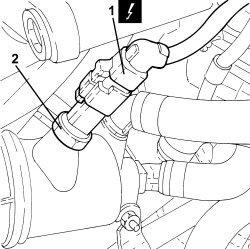
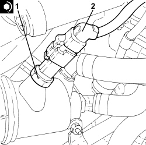

1060G14 ENGINE COOLANT TEMPERATURE SENSOR - R.R.
- Path
- Procedures > 10 ENGINE > 1060 DIESEL INJECTION SYSTEM > 1060G DIESEL INJECTION PRESSURE PUMP ELECTRONIC CONTROL > 1060G14 ENGINE COOLANT TEMPERATURE SENSOR - R.R.
- Kind
- repair procedure (removal / refitting; the operation number is the code)
- Applies to
- engines: 2.4 JTD 20v; all production periods
- Interactive page
- https://sloeber94.github.io/elrnDB-aBrrSpdr/en/#/946002995
Applies to: engines: 2.4 JTD 20v; all production periods
 Removing
Removing
 Refitting
RefittingOp. 1016A10 SOUND-PROOFING COVER - R.R
1. Disconnect the electrical connection from the engine coolant temperature sensor.
Description | Connector | |
|---|---|---|
1 | Engine coolant temperature sensor/sender unit |
2. Undo the engine coolant temperature sensor and remove it.

Applies to: engines: 2.4 JTD 20v; all production periods
Refitting
Removing1. Place the engine coolant temperature sensor in its housing and tighten it to the recommended torque.
2. Connect the electrical connection to the engine coolant temperature sensor.

Applies to: engines: 2.4 JTD 20v; all production periods
Topics linked from this page (3)
- 1016A10 SOUND-PROOFING COVER - R.R
- 5530B10 BATTERY - R+R
- K036 ENGINE COOLANT TEMPERATURE SENSOR/SENDER UNIT